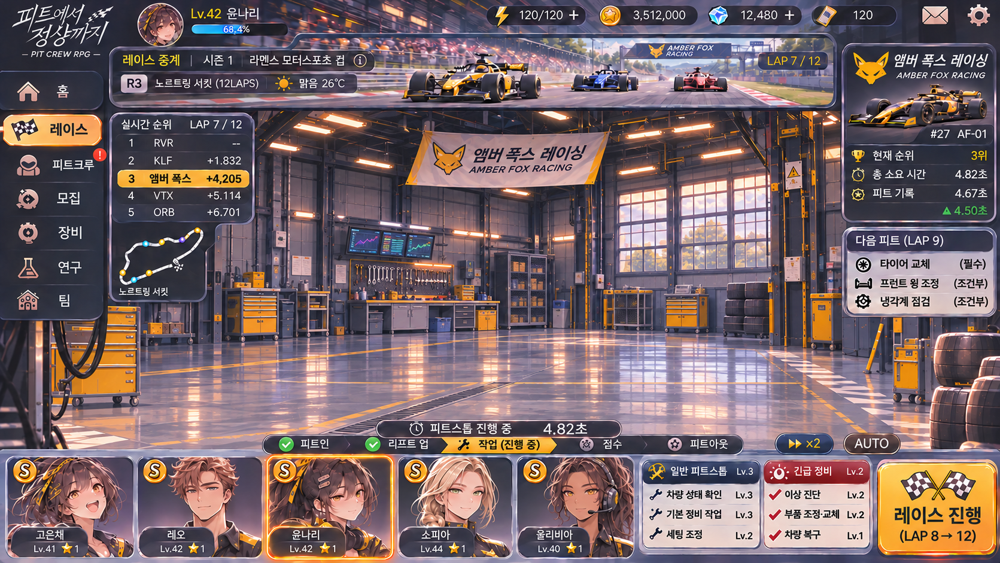

피트크루
키우기
00:00.00
일시정지
추월 시연
새 레이스
정비 시연

● LIVE
LAP 1 / 3
자동 하이라이트
속도 ×2
실시간 순위
앰버 폭스 레이싱
#27 · AF-01
3
위
본선 주행
정비 예정 4.80초
피트 진입 예약
정비 지연 +2초
피트 대기
고은채
레오
윤나리
소피아
올리비아
RACE RADIO
▶ ×2
AUTO
다음 피트 · LAP 2
⚑ ⚑
레이스 시작
3 LAPS
정비 프레임 로딩 중…
디버그 · 정비 프레임 확인
단계
실제 경기
대기
작업 준비
리프트 상승
정비 작업
리프트 하강
출발 확인
완료
프레임 시간
프레임 재생
CHEQUERED FLAG
다시 레이스